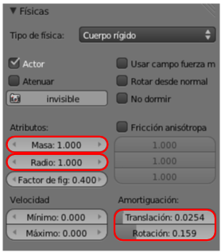

Parámetros importantes
A continuación damos un recetario de parámetros que consideraremos en primer instancia, aunque hay otros muchos que conviene experimentar (todos son relativos a Cuerpo rigido):
PANEL FÍSICAS  . BOTONERA: LÍMITES DE COLOSIÓN
. BOTONERA: LÍMITES DE COLOSIÓN
- Límites de colisión. Hay límites para las geometrías básicas Cubo, Esfera, Cilindro y Cono. Del resto de opciones nos interesa mucho Envoltura convexa que es la adecuada para mallas no tan geométricas como puede ser la mona Suzanne.

- Margen. Determina una distancia entre la malla y una especie de envoltorio virtual que es el que realmente colisiona. Si queremos que sea 0.000 y nos da algún problema basta con ampliarlo mínimamente (0.002, por ejemplo) y se arregla el conflicto.
PANEL FÍSICAS . BOTONERA: FÍSICAS

- Radio. Está en la botonera Físicas. Se representa visualmente en el editor Vista 3D tanto en sombreado Alambre como en Sólido. Está directamente relacionado con el Límite de colisión: Esfera. Si este límite está asignado a una esfera lo normal es que Radio coincida con la malla. Pero por diferentes motivos puede que queramos un radio mayor o menor para la esfera delimitadora.
- Masa. También en la botonera Físicas. Aunque ya sabemos que masa no es lo mismo que peso debemos hacer una interpretación en este sentido. Dos objetos, uno con una Masa: 1.000 y otro de 2.000, porque descenderán a la misma velocidad. Pero no es lo mismo que un cuerpo de Masa: 10.000 golpee a otro Cuerpo rígido de 5.000 que a otro de 1.000. El de Masa: 5.000 se comportará como si fuera mucho más pesado y sufrirá menos desplazamiento que el de 1.000.
- Amortiguación. En realidad no todos los cuerpos caen a la misma velocidad debido a que a algunos les afecta más que a otros el aire que se encuentran por el camino, tal es el caso de una pluma. Este rozamiento puede editarse por separado para:
-
- Traslación. Afecta a asuntos como la caída libre. 1.000 hace que el objeto encuentre tanta resistencia que no se mueva.
-
- Rotación. Exatamente igual.
PANEL MUNDO  . BOTONERA: FÍSICAS
. BOTONERA: FÍSICAS
- Gravedad. Está claro que hace referencia a la fuerza con la que los cuerpos son atraídos verticalmente hacia abajo en el eje Z Global. Gravedad: 0.00 equivale a flotar en el aire.
- CPS. Son los cuadros por segundo que van a calcularse. Este parámetro es realmente importante si vamos a acabar convirtiendo nuestra simulación en una animación en vídeo. En ese caso ajustaremos aquí entre 24 y 30 que serán los fotogramas por segundo a los que haremos la animación final. Un valor alto origina animaciones de tipo slow-motión (cámara superlenta). En realidad sea cual sea este parámetro es posible variar la velocidad de reproducción posteriormente manipulando la distancia entre los fotogramas clave que se generan al grabar.
- Sub-pasos. Aumenta la precisión de los cálculos corrigiendo posibles comportamientos extraños (objetos que se introducen en otros al colisionar, por ejemplo). Una variación en este parámetro puede suponer un cambio de comportamiento en los rebotes porque la información procesada es mayor.
PANEL MATERIALES  . BOTONERA: FÍSICAS
. BOTONERA: FÍSICAS

Hay propiedades físicas exclusivas de los materiales. Parece razonable que cuando estamos creando un objeto con apariencia de plástico sea ahí donde nos ocupemos de determinar sus propiedades físicas para el motor de juegos. Al encontrarnos en la modalidad Blender Game se hace visible alguna botonera nueva como es el caso de Físicas.
Aquí definimos cuánta fuerza se absorbe en un impacto o si hay mucho rozamiento en el contacto de unos objetos con otros:
- Fricción. Determina cuánto rozamiento se origina. En un cubo que resbala por un plano inclinado, un valor de Fricción: 0.000 en este último significa que el cubo resbala indefinidamente aunque el valor de Fricción de ese cubo sea enorme. El plano se comportaría como una pista de hielo.
- Elasticidad. En un choque con otro cuerpo ¿cuánta fuerza absorbe este objeto? Si el cubo de antes cae desde una altura, al llegar al plano sólo rebotará si ninguno de los dos (plano y cubo) absorbe el 100% de la fuerza; si uno de los dos objetos tiene Elasticidad: 0.000 el cubo no rebotará. La correcta manipulación de este parámetro hace, por ejemplo, que una pelota bote de forma realista pero al ser un Cuerpo rígido no se deformará en el bote; sin embargo, el análisis de los Cuerpos elásticos sobrepasa los fines de Blender: 3D en la Educación.